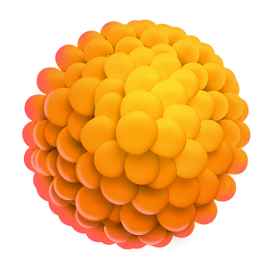

Листайте вниз
Всегда ли цели терпаии СД2 на поверхности?
Гипогликемия
Цель по HbA1c
Осложнения СД
СС риски
Основа терапии - патогенез СД2
Звенья патогенеза СД2
8
Микрофлора кишечника

9
Нарушение иммунной регуляции/воспаление
↓ амилин
10
Желудок
1
β-клетки
β
2
инкретинового эффекта
3
дефект a-клеток
↑ глюкагон
Гипергликемия
11
Почки
7
Головной мозг
Инсулинорезистентность
6
Печень
5
Мышцы

4
Жировые клетки